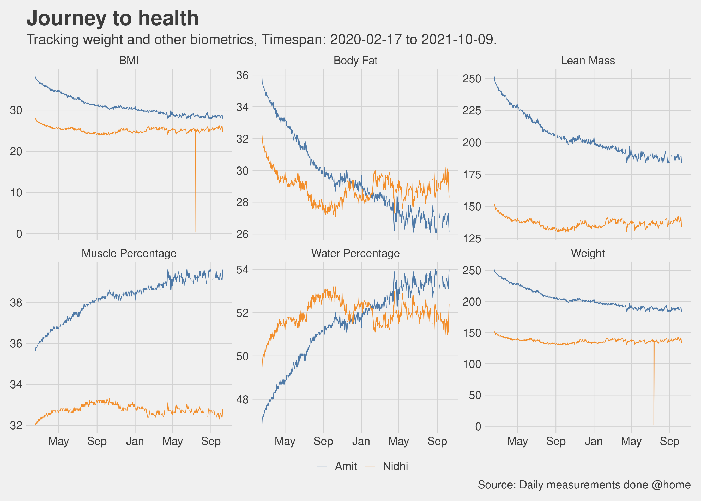

Chapter 6 Other Topics
This chapter covers miscellaneous topics which are quite important but I did not have enough material to give them a chapter of their own so I parked them all here.
6.1 Time Restricted Eating
Time restricted eating (TRE) or as everyone likes to call it “intermittent fasting”. I can end this section by simply saying please read this excellent book called “The Circadian Clock” by Dr Satchin Panda, it will provide you all the evidence based reasoning you need to try out TRE. I tried time restricted eating while doing exercise 4 to 5 days a week I personally found the results to be great.
As a matter of habit, I now eat within a 12 hour window and it helps me feel light and energetic. I try finishing up dinner by 7 - 7:30pm and usually sleep by 11.30pm. If I have not had dinner by 8pm, then I skip it. Some days if I am working late into the night then I do feel a little but hungry, and if feel really hungry then I have half a cup of almond milk and that usually calms the rumblings in the stomach. If you think about it a 12 hour fasting window may not be as hard to do as it maybe sounds at first, 6 to 8 hours of those 12 are hopefully spent at the night sleeping, then add another hour or two before sleeping and after waking up in the morning and you have a 12 hour fasting window.
I try doing a 14 hour fasting and 10 hour eating window every now and then, works fine. I have also tried a 22 hour fasting and 2 hour eating window once a week for a few weeks. Other than the fact that the brain says why are you not eating, I did not feel any discomfort. I even exercised on a 22-2 day, no problem at all.
What I have also experienced is that a day of 22-2 TRE does indeed help offset any indiscretions of the day before. I have tried this a couple of times, if I had gone overboard with a heavy dinner, ice-cream or other goodies during the day then doing a 22-2 the next day helps. For the 22-2 TRE, I usually take a coffee for breakfast, a plant based protein shake in the afternoon (just with water), another coffee around 4pm, and then finally dinner around 6.30pm. I have no scientific data on this but just my own anecdotal evidence.
6.2 What about supplements?
We did take supplements for micro-nutrients (vitamins and minerals). To be clear, the intention was not take supplements for muscle building but for general health. Even with the previous protein based diet program that I followed earlier there was a recommendation for different vitamin and minerals supplements so when we started exercising more, the topics of supplements came up organically. We discussed with our trainer and as I started reading more and more, I got more convinced that we should take some micronutrient supplements to augment what we were eating. I did my own research, discussed with my trainer as to which supplements were required and which brands had ingredients which were minimal and safe. I used labdoor.com as one of my starting points for finding out good supplements.
Here is my list:
- Vitamin D
- Vitamin C
- Zinc
- Multi Vitamins
- Fish Oil
- Probiotics
- Amino Acids
- Creatine Monohydrate
Did not start taking these supplements from day 1, this happened over a 6 month period. Do not start any supplements without first consulting with your doctor.
6.3 For the love of charts
Here are some more charts that I could not fit anywhere else.
6.3.1 How many days did it take to lose every single pound?
Sometimes we get anxious about being stuck at a particular weight or oscillating within a few pounds. As enough data got collected, we could see empirically how many days did we spend at each weight level so that before we start getting anxious we know if we really need to or is it still within an observed range.

6.4 Breakup of the days
At a macro level it is useful to visualize how many days did we lose weight Vs how many days did we gain and how many days was there no change. Ofcourse we know we would have lost weight on more days than we gained weight (otherwise this book would not exist), but a good visualization is always welcome.
